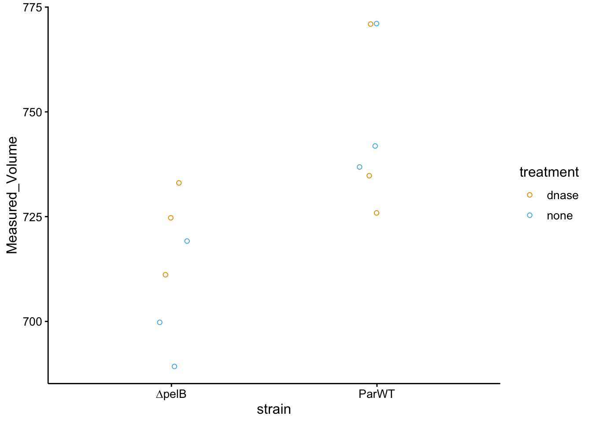
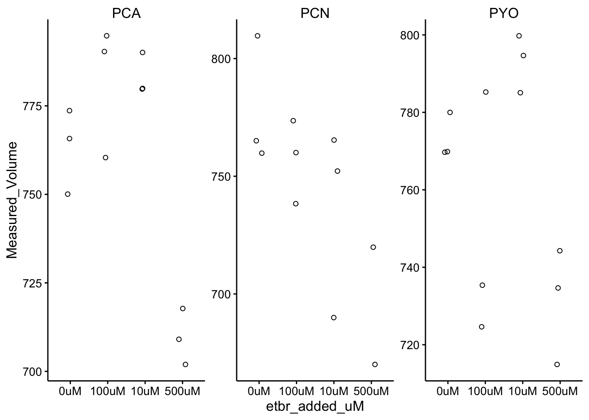
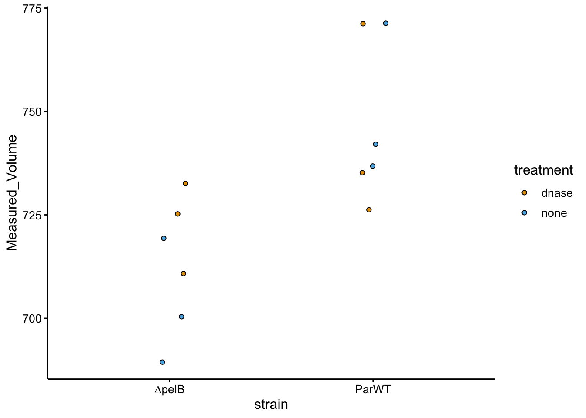
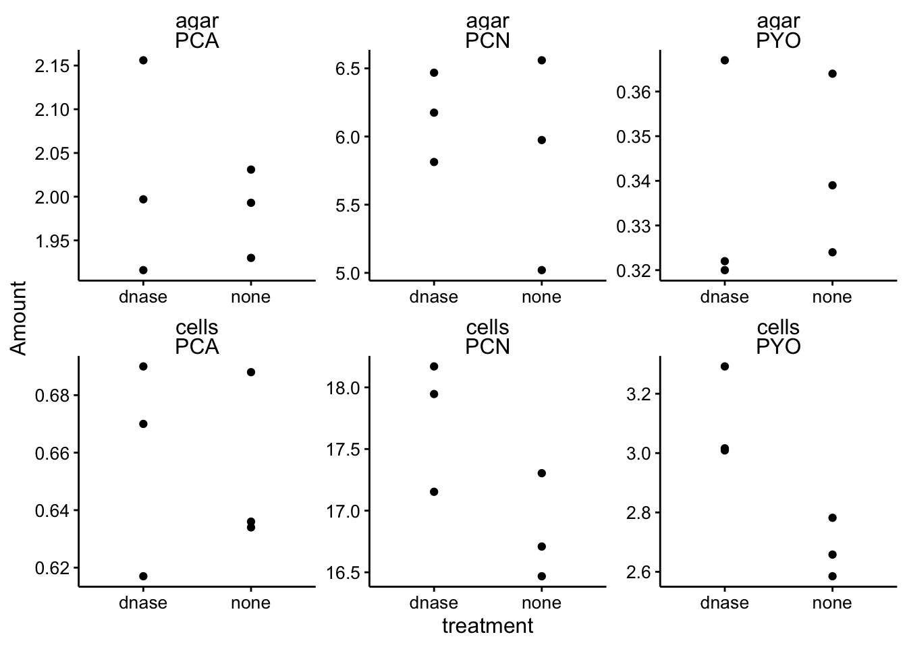
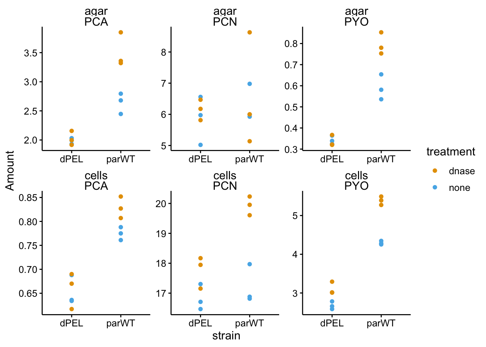
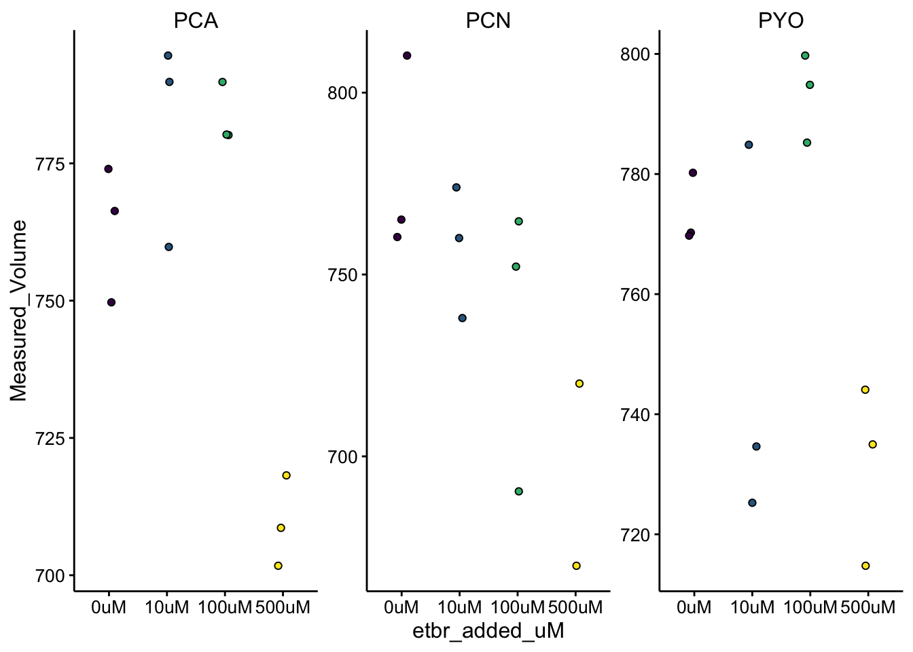

library(tidyverse)
library(cowplot)
library(viridis)
library(knitr)
library(kableExtra)
knitr::opts_chunk$set(tidy.opts=list(width.cutoff=60),tidy=TRUE, echo = TRUE, message=FALSE, warning=FALSE, fig.align="center")
source("../../IDA/tools/plotting_tools.R")
theme_set(theme_1())This experiment is a follow up to several other attempted experiments to perturb the DNA bound phenazines in colony biofilms. We tried to treat biofilms with DNase 1 in he underlying agar to chop up the eDNA into smaller pieces. This was somewhat successful when DNase was not incubated in its NEB buffer, which killed the cells. However, the effects were modest, so I tried repeating the experiment with DNase in PBS supplemented with Mg2+, which should further activate the enzyme. Further, I wanted to try the experiment on WT and ∆pelB colonies, since we think that Pel may be binding eDNA and blocking PYO binding sites it may also interfere with the activity of the DNase…?
I have also tried perturbing colony retained phenazines with a competitive intercalator ethidium (also tried propidium). This experiment has worked reasonably well multiple times, although it is complicated to displace WT phenazines, since the cells just seem to make more. Recently I tried exposing ∆phz* to phenazine and an etbr competitor simultaneously and it worked well. However, I only had duplicate measurements and I did not test PCA (only PYO and PCN). Therefore I wanted triplicates this time and also expose to PCA.
Colonies were grown as normal in 6 well plates on 0.2um filter membranes atop agar, incubated in the dark at room temperature. Images were taken on the keyence on days 3 and 4.
∆phz* colonies were inoculated on top of plate wells containing different concentrations of ethidium bromide (etbr) and constant concentrations of phenazines (50uM). The concentrations of etbr used were 0, 10, 100, and 500. Each well contained 500uL of liquid (in PBS 50) added to the bottom before agar was poured on top and mixed.
10mM etbr stock was prepared and filter sterilized. It was diluted 5 fold and then 10 fold to yield 3 different stock solutions of 10mM, 2mM, and 200uM. Each of those stocks was 20x the intended final concentration, so 250uL of each was added to the appropriate well (or PBS only). Then each phenazine (50uM) was added to the wells (~10 - 40uL) and the remaining volume was made up with PBS 50.
Plates were prepared and dried for 1 hr in the biosafety cabinet.
Phenazine stocks were 10mM for PCA in NaOH, 20mM for PCN in DMSO, and 6.79mM for PYO in HCl.
Six Parsek WT colonies and six ∆pelB colonies were grown as usual for three days. For 24 hours, colonies were transferred to fresh agar plate wells containing 25uL DNase or buffer only. The DNase / buffer solutions were allowed to dry for ~5 min, but were still liquid pools on the surface of the agar.
The Buffer was PBS 137mM NaCl pH 7.2 + 5mM MgSO4.
Colonies were resuspended in 800uL PBS 137 (pH 7.2) in eppendorf tubes. Tubes with filter membranes + colonies were vortexed for 1 min each at max speed. This was sufficient to resuspend most of the colonies into a cloudy haze and small bits of biofilm. However for colonies treated with 100uM or 500uM EtBr, the colonies were very tough and the vortex was not sufficient. Next all the membranes were removed from the tubes, and for the colonies that did not come off the membranes they were moved (biofilm + membrane) to a petri dish and the intact biofilm mass was removed from the membrane with tweezers and placed back in the tube.
*Note the PCA treated colonies were treated in the water bath sonicator on high for 5 min in an attempt to resuspend them better. This was not successful and was not performed on the PCN and PYO samples.
The volume of liquid in each tube was measured by pipette. The DNase colonies were easy to resuspend and a p200 was used. The etbr were more difficult to resuspend, so a p1000 was used to grind and further break up the biofilm by pipetting up and down and the volume of that slurry was measured (crudely) in the p1000 (starting from 850uL pipette volume).
Finally all of the biofilm suspensions were centrifuged at 6,000 rcf for 5 min to pellet the cells. 650uL of the supernatant was transferred to fresh tubes. The etbr treated samples had obviously red liquids at 100 and 500uM.
df_vol <- read_csv("data/2019_10_22_colony_volumes.csv")
ggplot(df_vol %>% filter(treatment != "etbr"), aes(x = strain,
y = Measured_Volume, color = treatment)) + geom_jitter(shape = 21,
width = 0.1)
ggplot(df_vol %>% filter(treatment == "etbr"), aes(x = etbr_added_uM,
y = Measured_Volume)) + geom_jitter(shape = 21, width = 0.1) +
facet_wrap(~phz_added, scales = "free")
df_dnase <- read_csv("data/2019_10_22_colony_dnase_data.csv")
ggplot(df_dnase %>% filter(strain == "parWT"), aes(x = treatment,
y = Amount)) + geom_point() + facet_wrap(material ~ measured_phenazine,
scales = "free")
ggplot(df_dnase %>% filter(strain == "dPEL"), aes(x = treatment,
y = Amount)) + geom_point() + facet_wrap(material ~ measured_phenazine,
scales = "free")
ggplot(df_dnase %>% filter(material != "blank"), aes(x = strain,
y = Amount, color = treatment)) + geom_point() + facet_wrap(material ~
measured_phenazine, scales = "free")
df_etbr <- read_csv("data/2019_10_22_colony_etbr_data.csv")
ggplot(df_etbr, aes(x = factor(etbr_added_int), y = Amount)) +
geom_jitter(shape = 21, width = 0.1) + facet_wrap(~phz_added,
scales = "free")
sessionInfo()## R version 3.5.2 (2018-12-20)
## Platform: x86_64-apple-darwin15.6.0 (64-bit)
## Running under: macOS Mojave 10.14.6
##
## Matrix products: default
## BLAS: /Library/Frameworks/R.framework/Versions/3.5/Resources/lib/libRblas.0.dylib
## LAPACK: /Library/Frameworks/R.framework/Versions/3.5/Resources/lib/libRlapack.dylib
##
## locale:
## [1] en_US.UTF-8/en_US.UTF-8/en_US.UTF-8/C/en_US.UTF-8/en_US.UTF-8
##
## attached base packages:
## [1] stats graphics grDevices utils datasets methods base
##
## other attached packages:
## [1] kableExtra_1.0.1 knitr_1.23 viridis_0.5.1
## [4] viridisLite_0.3.0 cowplot_0.9.4 forcats_0.3.0
## [7] stringr_1.3.1 dplyr_0.8.1 purrr_0.2.5
## [10] readr_1.3.1 tidyr_0.8.2 tibble_2.1.3
## [13] ggplot2_3.2.0 tidyverse_1.2.1
##
## loaded via a namespace (and not attached):
## [1] tidyselect_0.2.5 xfun_0.7 haven_2.0.0 lattice_0.20-38
## [5] colorspace_1.4-0 generics_0.0.2 htmltools_0.3.6 yaml_2.2.0
## [9] rlang_0.4.0 pillar_1.3.1 glue_1.3.1 withr_2.1.2
## [13] modelr_0.1.2 readxl_1.2.0 munsell_0.5.0 gtable_0.2.0
## [17] cellranger_1.1.0 rvest_0.3.2 evaluate_0.14 labeling_0.3
## [21] broom_0.5.1 Rcpp_1.0.1 scales_1.0.0 backports_1.1.3
## [25] formatR_1.5 webshot_0.5.1 jsonlite_1.6 gridExtra_2.3
## [29] hms_0.4.2 digest_0.6.18 stringi_1.2.4 grid_3.5.2
## [33] cli_1.1.0 tools_3.5.2 magrittr_1.5 lazyeval_0.2.1
## [37] crayon_1.3.4 pkgconfig_2.0.2 xml2_1.2.0 lubridate_1.7.4
## [41] assertthat_0.2.1 rmarkdown_1.13 httr_1.4.0 rstudioapi_0.9.0
## [45] R6_2.4.0 nlme_3.1-140 compiler_3.5.2